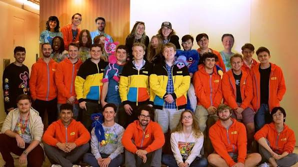
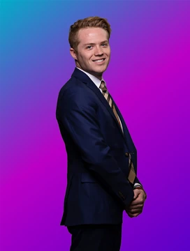
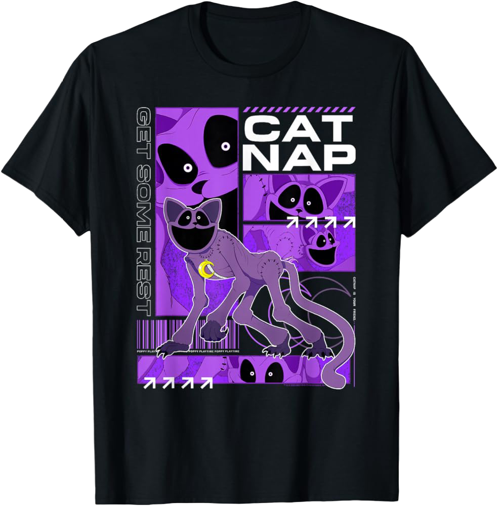
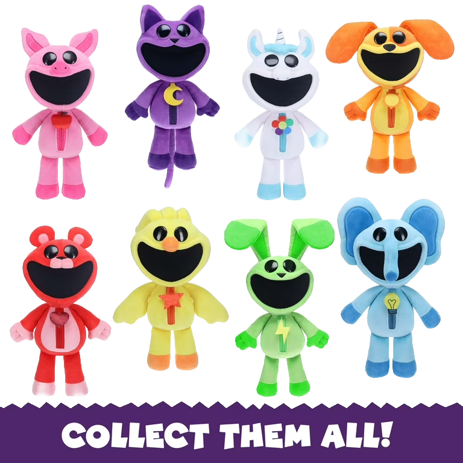
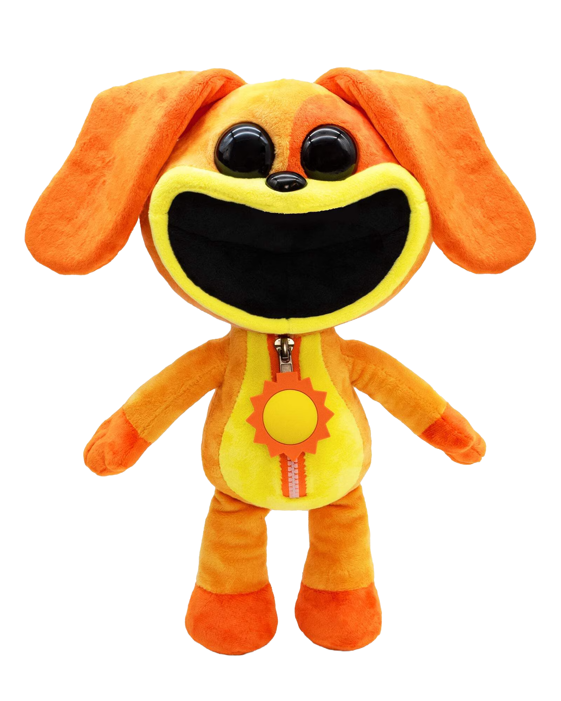
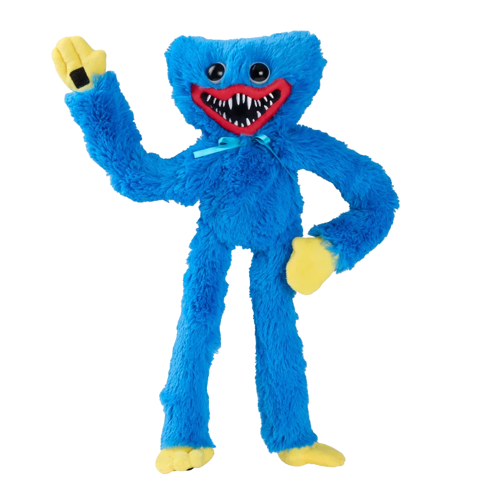
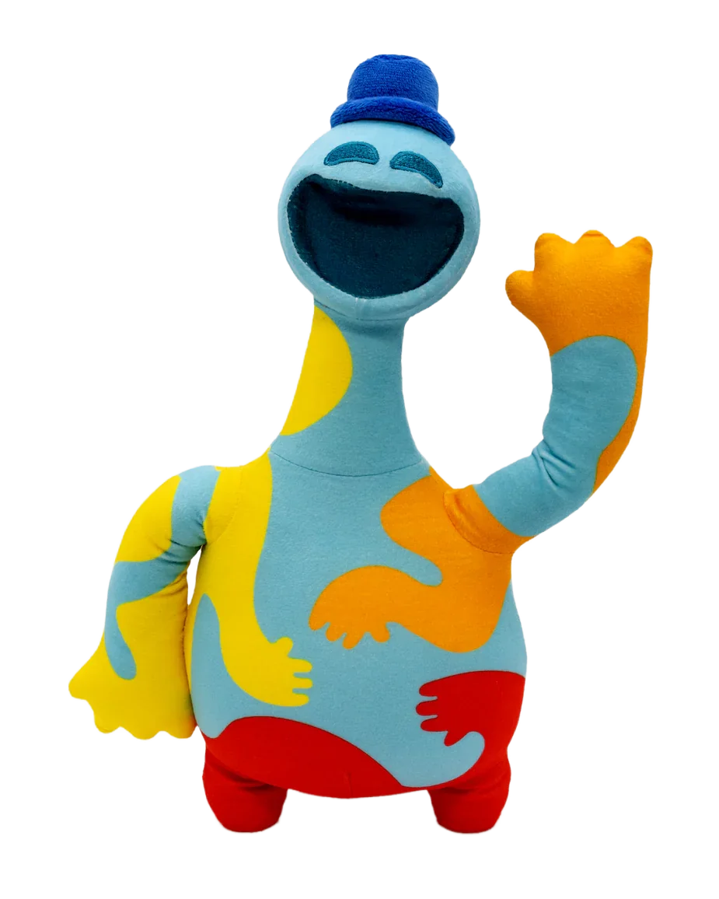
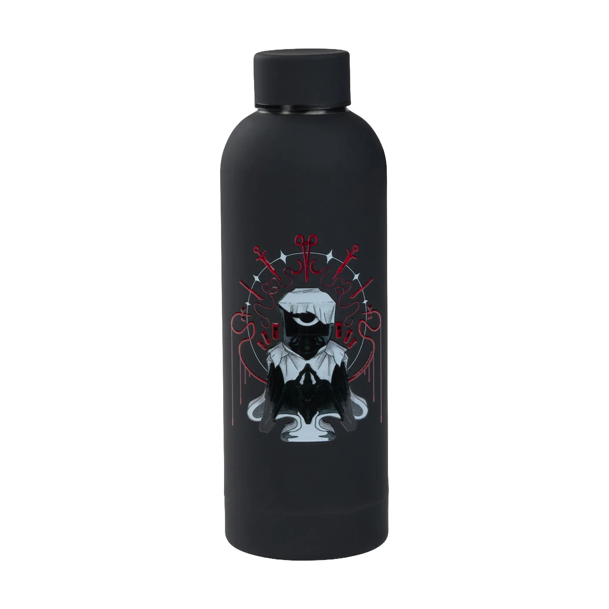

Mob Entertainment a été fondée en 2015 par Seth et Zach Belanger sous le nom d'EnchantedMob, se constituant rapidement une communauté de fans. Ils ont ensuite décidé de passer à l'étape supérieure et d'ouvrir un bureau à Saint-Louis, dans le Missouri, aux États-Unis. Zach et Micah Preciado de ZAMination les ont rejoints en tant que directeurs créatifs. D'autres animateurs ont également intégré l'entreprise pour contribuer à concrétiser la vision de Seth et Zach. Plus tard, la société a changé de nom pour devenir Mob Entertainment, marquant ainsi le début d'une nouvelle ère.


CEO Mob Games
Zach Belanger et Seth Belanger
Le « merch » (ou merchandising) désigne l'ensemble des produits dérivés — comme des vêtements, des accessoires ou des objets de collection — créés à l’effigie d’une marque, d’un artiste ou d'un créateur de contenu. Bien plus que de simples objets promotionnels, le merch est un puissant outil de communication qui permet de diversifier ses revenus, de booster sa visibilité et, surtout, d'offrir à sa communauté un symbole concret d'appartenance et de soutien.





